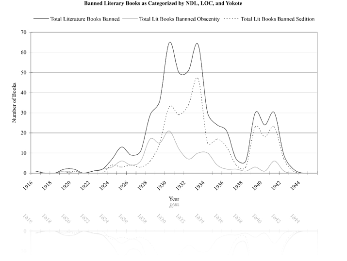

Jonathan E. Abel


![CURRENT RESEARCH
Archiving Censors: The Preservation and Production of Banned Japanese Discourse, 1923-1970.
This project explores the curious relationship between archives and literary censorship from the 1920s through the 1960s in Japan and the United States. On the one hand, censors construct and maintain their own archives preserving that which they deem impermissible; on the other hand, the act of suppression yields an archive of writing on, against, and in favor of censorship. The extant archive of the Japanese imperial censor (1923-1945) and the archive of the Allied Occupation censors (1945-1952) stand as tangible reminders of this contradictory function of censors. In turn, recalcitrant authors and publishers have used their encounters with censors as the impetus to rail against the authorities and to appeal to the prurient interests of their readers, consciously risking bans through the intentional use of the censor’s categories for offense. Reading the detritus left in the wake of censorship reveals not only the violence of the authorities, but also their productive influence on discourse. “Archiving Censors” examines these contradictory and paradoxical relationships between collection, suppression, and production to shed light on the dark valley attributed to wartime discourse and to cast a shadow on the supposedly bright, open space of free postwar discourse. By looking at literary censorship through a transwar and transnational perspective, this project proposes a method for transcending the politics of blame evident in postwar critiques of Japanese literary production and repression.
“Miner Literatures: Comparatist, Belletrist, Funambulist,” introduction to “Correspondence, Notes, and Ephemera” section of the Earl Miner festschrift. Bucknell University Press, Forthcoming 2008.
PUBLICATIONS
Criticism
“The Ero-Puro Sense: Declassifying Censored Literature from Interwar Japan,” Japan Forum, 19(3) 2007, p341-367.
“Canon and Censor: How War Wounds Bodies of Writing,” Comparative Literature Studies, 42(1): Winter 2005. p74-93.
“Translation as Community: The Opacity of Modernizations of Genji monogatari (Tales of Genji),” Nation, Language, and the Ethics of Translation, edited by Sandra Bermann and Michael Wood, Princeton University Press, 2005. p146-158.
“Archiving the Forbidden: War Responsibilities and Censored Literature,” Hermeneutical Strategies: Methods of Interpretation in the Study of Japanese Literature (Proceedings of the Association for Japanese Literary Studies, 5) Summer 2004. p421-444.
Entries on “Ōe Kenzaburō” and “Etō Jun,” in Encyclopedia of Modern Asia (New York: Scribner, 2002).
“Different from Difference: Rereading Kurutta Ippeiji (A Page of Madness),” Asian Cinema, 12(5) Fall 2001. p72-96.
Translations
Translation and introduction of Azuma Hiroki’s 2001 Dōbutsuka suru posutomodan (Animalizing Postmodernity: Japanese Society Seen through Otaku), a book length critical study of the consuming behavior of manga fans. Minnesota University Press. Forthcoming 2008.](research_publications_files/shapeimage_2.png)